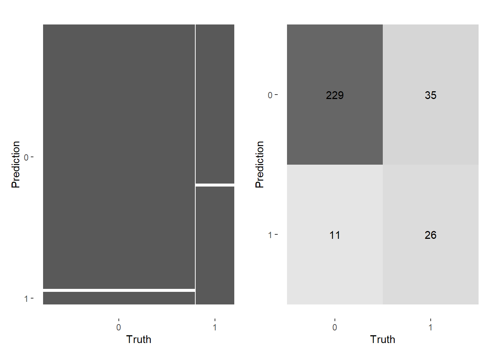

Loading required package: lattice
Attaching package: 'caret'
The following objects are masked from 'package:yardstick':
precision, recall, sensitivity, specificity
The following object is masked from 'package:purrr':
lift
library(corrplot)
corrplot 0.92 loaded
library(flextable)
Attaching package: 'flextable'
The following objects are masked from 'package:ggpubr':
border, font, rotate
The following object is masked from 'package:purrr':
compose
Rows: 1000 Columns: 14
── Column specification ────────────────────────────────────────────────────────
Delimiter: ","
chr (1): Method
dbl (13): Site, Angaus, SegSumT, SegTSeas, SegLowFlow, DSDist, DSMaxSlope, U...
ℹ Use `spec()` to retrieve the full column specification for this data.
ℹ Specify the column types or set `show_col_types = FALSE` to quiet this message.
Split the joined data from above into a training and test set, stratified by outcome score. Use 10-fold CV to resample the training set, stratified by Angaus
# Specify the outcome variable as a factoreel_data$Angaus <-factor(eel_data$Angaus)# Create training (70%) and test (30%) sets for the set.seed(123) # for reproducibility (random sample)data_split <-initial_split(eel_data, prop =0.70, strata = Angaus)data_train <-training(data_split)data_test <-testing(data_split)# 10-fold CV on the training datasetcv_folds <- data_train |>vfold_cv(v =10, strata = Angaus)
Preprocess
Create a recipe to prepare your data for the XGBoost model. We are interested in predicting the binary outcome variable Angaus which indicates presence or absence of the eel species Anguilla australis
# Create a recipe for the dataeel_recipe <-recipe(Angaus ~ ., data = data_train) %>%step_normalize(all_numeric(), -all_outcomes()) %>%step_dummy(all_nominal(), -all_outcomes())# Print the recipeeel_recipe
Following the XGBoost tuning strategy outlined on Monday, first we conduct tuning on just the learn_rate parameter:
Create a model specification using {xgboost} for the estimation
Only specify one parameter to tune()
xgb_spec <-boost_tree(mtry =12, # Fixed value for mtrytrees =1000, # A large number of trees to start withtree_depth =4, # Maximum depth of each treemin_n =10, # Minimum number of observations in each terminal nodeloss_reduction =0, # Minimum loss reduction required to make a further partition on a leaf nodesample_size =1, #The size of the data set used for modeling within an iteration of the modeling algorithm, such as stochastic gradient boosting.stop_iter =10, # Early stopping parameter# update the learning rate parameter to be tunedlearn_rate =tune()) %>%set_engine("xgboost") %>%set_mode("classification")
Set up a grid to tune your model by using a range of learning rate parameter values: expand.grid(learn_rate = seq(0.0001, 0.3, length.out = 30))
# Set up a grid for tuning the learning rate parameterlearn_rate_grid <-expand.grid(learn_rate =seq(0.0001, 0.3, length.out =30))
Use appropriate metrics argument(s) - Computational efficiency becomes a factor as models get more complex and data get larger. Record the time it takes to run. Do this for each tuning phase you run.You could use {tictoc} or Sys.time().
# Create a time trackertic()# Tune the model using cross-validationxgb_res <-tune_grid( xgb_spec,resamples = cv_folds,grid = learn_rate_grid,metrics =metric_set(roc_auc, pr_auc, accuracy),control =control_grid(verbose =FALSE),preprocessor = eel_recipe)# Record the elapsed timetoc()
300.14 sec elapsed
Show the performance of the best models and the estimates for the learning rate parameter values associated with each.
# Show the best models and their associated tree parameter valuesbest_rocauc <-show_best(xgb_res, "roc_auc", n =1)best_pr_auc <-show_best(xgb_res, "pr_auc", n =1)best_acc <-show_best(xgb_res, "accuracy", n =1)best <-bind_rows(best_rocauc,best_pr_auc, best_acc)theme_box(flextable(best))
learn_rate
.metric
.estimator
mean
n
std_err
.config
0.28965862
roc_auc
binary
0.8422070
10
0.014784903
Preprocessor1_Model29
0.01044138
pr_auc
binary
0.9585236
10
0.002940721
Preprocessor1_Model02
0.20692759
accuracy
binary
0.8127023
10
0.011724095
Preprocessor1_Model21
Tune Tree Parameters
Create a new specification where you set the learning rate (which you already optimized) and tune the tree parameters.
# Create a new specification with the optimal learning rate xgb_spec2 <-boost_tree(mtry =tune(),trees =tune(), # Tune the number of treestree_depth =tune(), # Tune the maximum depth of each treemin_n =tune(), # Tune the minimum number of observations in each terminal nodeloss_reduction =tune(), # Tune the minimum loss reduction required to make a further partition on a leaf nodesample_size =1, # The size of the data set used for modeling within an iteration of the modeling algorithm, such as stochastic gradient boosting.stop_iter =10, # Early stopping parameterlearn_rate =0.01044138# Set the optimal learning rate) %>%set_engine("xgboost") %>%set_mode("classification")
Set up a tuning grid. This time use grid_max_entropy() to get a representative sampling of the parameter space
# Set up a grid to tune the tree parameterstree_grid <-grid_max_entropy(mtry(range =c(1, 12)),trees(range =c(100, 2000)),tree_depth(range =c(3, 10)),min_n(range =c(1, 20)),loss_reduction(range =c(0, 0.1)),size =100)# Tune the model using cross-validationtic()xgb_res2 <-tune_grid( xgb_spec2,resamples = cv_folds,grid = tree_grid,metrics =metric_set(roc_auc, pr_auc, accuracy),control =control_grid(verbose =FALSE),preprocessor = eel_recipe)toc()
982.03 sec elapsed
Show the performance of the best models and the estimates for the tree parameter values associated with each.
# Show the best models and their associated tree parameter valuesbest_rocauc2 <-show_best(xgb_res2, "roc_auc", n =1)best_pr_auc2 <-show_best(xgb_res2, "pr_auc", n =1)best_acc2 <-show_best(xgb_res2, "accuracy", n =1)best2 <-bind_rows(best_rocauc2,best_pr_auc2, best_acc2)theme_box(flextable(best2))
mtry
trees
min_n
tree_depth
loss_reduction
.metric
.estimator
mean
n
std_err
.config
2
574
1
7
1.119450
roc_auc
binary
0.8711348
10
0.011583911
Preprocessor1_Model011
2
574
1
7
1.119450
pr_auc
binary
0.9654967
10
0.003299161
Preprocessor1_Model011
10
394
3
7
1.012903
accuracy
binary
0.8456239
10
0.010184144
Preprocessor1_Model081
theme_box(flextable(best_pr_auc2))
mtry
trees
min_n
tree_depth
loss_reduction
.metric
.estimator
mean
n
std_err
.config
2
574
1
7
1.11945
pr_auc
binary
0.9654967
10
0.003299161
Preprocessor1_Model011
Tune Stochastic Parameters
Create a new specification where you set the learning rate and tree parameters (which you already optimized) and tune the stochastic parameters.
# Create a new specification with the optimal learning rate and tree parameters# xgb_spec3 <-boost_tree(mtry =2,trees =574, # the number of treestree_depth =7, # the maximum depth of each treemin_n =1, # the minimum number of observations in each terminal nodeloss_reduction =1.119450, # the minimum loss reduction required to make a further partition on a leaf nodesample_size =tune(), # The size of the data set used for modeling within an iteration of the modeling algorithm, such as stochastic gradient boosting.stop_iter =tune(), # Early stopping parameterlearn_rate =0.01044138# Set the optimal learning rate) %>%set_engine("xgboost") %>%set_mode("classification")
Set up a tuning grid. Use grid_max_entropy() again.
# Set up a grid to tune the stochastic parameters# stochastic_grid <-grid_max_entropy(sample_size( range =c(0, 1)),stop_iter(c(5, 50)))# Tune the model using cross-validationtic()xgb_res3 <-tune_grid( xgb_spec3,resamples = cv_folds,grid = stochastic_grid ,metrics =metric_set(roc_auc, pr_auc, accuracy),control =control_grid(verbose =FALSE),preprocessor = eel_recipe)toc()
13.8 sec elapsed
Show the performance of the best models and the estimates for the tree parameter values associated with each.
# Show the best models and their associated tree parameter valuesbest_rocauc3 <-show_best(xgb_res3, "roc_auc", n =1)best_pr_auc3 <-show_best(xgb_res3, "pr_auc", n =1)best_acc3 <-show_best(xgb_res3, "accuracy", n =1)best3 <-bind_rows(best_rocauc3,best_pr_auc3, best_acc3)theme_box(flextable(best3))
sample_size
stop_iter
.metric
.estimator
mean
n
std_err
.config
1
15
roc_auc
binary
0.8664657
10
0.011865011
Preprocessor1_Model1
1
15
pr_auc
binary
0.9638896
10
0.003282888
Preprocessor1_Model1
1
15
accuracy
binary
0.8427259
10
0.009127297
Preprocessor1_Model1
Finalize workflow and make final prediction
Assemble your final workflow will all of your optimized parameters and do a final fit.
xgb_spec_final <-boost_tree(mtry =2,trees =574, # the number of treestree_depth =7, # the maximum depth of each treemin_n =1, # the minimum number of observations in each terminal nodeloss_reduction =1.119450, # the minimum loss reduction required to make a further partition on a leaf nodesample_size =1, # The size of the data set used for modeling within an iteration of the modeling algorithm, such as stochastic gradient boosting.stop_iter =15, # Early stopping parameterlearn_rate =0.01044138# Set the optimal learning rate) %>%set_engine("xgboost") %>%set_mode("classification")
# Set up the final workflowxgb_wf_final <-workflow() %>%add_model(xgb_spec_final) %>%add_recipe(eel_recipe)# Fit the model using 10-fold cross-validationtic()final_fit <- xgb_wf_final %>%fit_resamples(resamples = cv_folds,metrics =metric_set(roc_auc,pr_auc, accuracy),control =control_resamples(save_pred =TRUE) )toc()
8.16 sec elapsed
# Get the average performance across all foldsfinal_perf <- final_fit %>%collect_metrics() theme_box(flextable(final_perf) )
# Get the average performance across all foldsfinal_perf_test <- final_fit_test %>%collect_metrics() theme_box(flextable(final_perf_test) )
.metric
.estimator
mean
n
std_err
.config
accuracy
binary
0.8470968
10
0.015141238
Preprocessor1_Model1
pr_auc
binary
0.9676901
10
0.006031429
Preprocessor1_Model1
roc_auc
binary
0.8818452
10
0.019236512
Preprocessor1_Model1
How well did your model perform? What types of errors did it make?
# Compute the confusion matrix for the final model training datafinal_pred <- final_fit %>%collect_predictions()conf_mat(final_pred, truth = Angaus, estimate = .pred_class)
Truth
Prediction 0 1
0 526 79
1 32 62
# Compute the confusion matrix for the final model test datafinal_pred_test <- final_fit_test %>%collect_predictions()cm_test <-conf_mat(final_pred_test, truth = Angaus, estimate = .pred_class)autoplot(cm_test, type ="mosaic") +autoplot(cm_test, type ="heatmap")

Running the model on the test data
**The confusion matrix shows the classification results of the final model. There were 26 true negatives (species not present and correctly classified), 11 false positives (species present but wrongly classified as absent), 35 false negatives (species absent but wrongly classified as present), and 229 true positives (species present and correctly classified) in the test dataset.
For the accuracy metric, the mean value is
0.8470968, which means that on average, the model correctly predicts the presence or absence of the eel species in 84.7% of cases. The standard error is 0.015141238, indicating some variation in performance across the 10 folds.
For the ROC AUC metric, the mean value is 0.8818452, which means that the model has good discriminatory power to distinguish between positive and negative cases. The standard error is 0.019236512, indicating relatively low variability in performance across the 10 folds.**
For the PR AUC metric, the mean value is 0.9676901, which means that the model has very good precision-recall tradeoff, and can achieve high precision while maintaining high recall or vice versa. The standard error is 0.006031429, indicating relatively low variability in performance across the 10 folds. This suggests that the model is consistently able to achieve high precision-recall tradeoff across different test sets.
Fit your model the evaluation data and compare performance
Now fit your final model to the big dataset: data/eval.data.csv
Rows: 500 Columns: 13
── Column specification ────────────────────────────────────────────────────────
Delimiter: ","
chr (1): Method
dbl (12): Angaus_obs, SegSumT, SegTSeas, SegLowFlow, DSDist, DSMaxSlope, USA...
ℹ Use `spec()` to retrieve the full column specification for this data.
ℹ Specify the column types or set `show_col_types = FALSE` to quiet this message.
# Create a recipe for the dataeel_recipe_eval <-recipe(Angaus_obs ~ ., data = eel_eval_data) %>%step_normalize(all_numeric(), -all_outcomes()) %>%step_dummy(all_nominal(), -all_outcomes())xgb_wf_final_eval <-workflow() %>%add_model(xgb_spec_final) %>%add_recipe(eel_recipe_eval)tic()final_fit_eval <- xgb_wf_final_eval %>%fit_resamples(resamples =vfold_cv(eel_eval_data, v =10, strata = Angaus_obs),metrics =metric_set(roc_auc,pr_auc, accuracy),control =control_resamples(save_pred =TRUE) )toc()
8.72 sec elapsed
# Get the average performance across all foldsfinal_perf_eval <- final_fit_eval %>%collect_metrics() theme_box(flextable(final_perf_eval) )
.metric
.estimator
mean
n
std_err
.config
accuracy
binary
0.8280432
10
0.011533081
Preprocessor1_Model1
pr_auc
binary
0.9605975
10
0.005515549
Preprocessor1_Model1
roc_auc
binary
0.8706177
10
0.014172529
Preprocessor1_Model1
# Compute the confusion matrix for the final model test datafinal_pred_eval <- final_fit_eval %>%collect_predictions()cm_eval <-conf_mat(final_pred_eval, truth = Angaus_obs, estimate = .pred_class)autoplot(cm_eval, type ="mosaic") +autoplot(cm_eval, type ="heatmap")
Running the model on the test data
**The confusion matrix shows the classification results of the final model. There were 46 true negatives (species not present and correctly classified), 25 false positives (species present but wrongly classified as absent), 61 false negatives (species absent but wrongly classified as present), and 368 true positives (species present and correctly classified) in the test dataset.
For the accuracy metric, the mean value is
0.8280432, which means that on average, the model correctly predicts the presence or absence of the eel species in 82.8% of cases. The standard error is 0.011533081, indicating some variation in performance across the 10 folds.
For the ROC AUC metric, the mean value is 0.8706177, which means that the model has good discriminatory power to distinguish between positive and negative cases. The standard error is 0.014172529, indicating relatively low variability in performance across the 10 folds.**
For the PR AUC metric, the mean value is 0.9605975, which means that the model has very good precision-recall tradeoff, and can achieve high precision while maintaining high recall or vice versa. The standard error is 0.005515549, indicating relatively low variability in performance across the 10 folds. This suggests that the model is consistently able to achieve high precision-recall tradeoff across different test sets.
How do your results compare to those of Elith et al.?
Use {vip} to compare variable importance
# Run your final modelfinal_tuned <-tune_grid(object = xgb_wf_final_eval,resamples =vfold_cv(eel_eval_data, v =10, strata = Angaus_obs),metrics =metric_set(pr_auc))
Warning: No tuning parameters have been detected, performance will be evaluated
using the resamples with no tuning. Did you want to [tune()] parameters?
Elith, J., et al. “A Working Guide to Boosted Regression Trees.” Journal of Animal Ecology, vol. 77, no. 4, July 2008, pp. 802–13, https://doi.org/10.1111/j.1365-2656.2008.01390.x.
Summer air Temperature is the greatest variable of importance in both models. There are some similarities and some drastic differences. My model places US slope as the next highest at 17.5% where they only have it at 6-9%. I then have US Native which was their second most important but the values are similar. The combined method does not reach the same level of importance in my model but the remaining variables have similar values.
What do your variable importance results tell you about the distribution of this eel species?
That the distribution is largely dependent on the Summer air temperature, in areas with indigenous forest(proportion) and dependent on the average slope in the upstream. This follows the papers description
‘The models developed for A. australis are consistent with the known ecology of the species, and accurately describe a species occurring in warm, lowland rivers in agricultural landscapes, often close to the coast but also penetrating inland, and preferring reaches with fine sediments. The modelled interactions highlight the suitability of habitats combining low flood frequencies and warm temperatures’